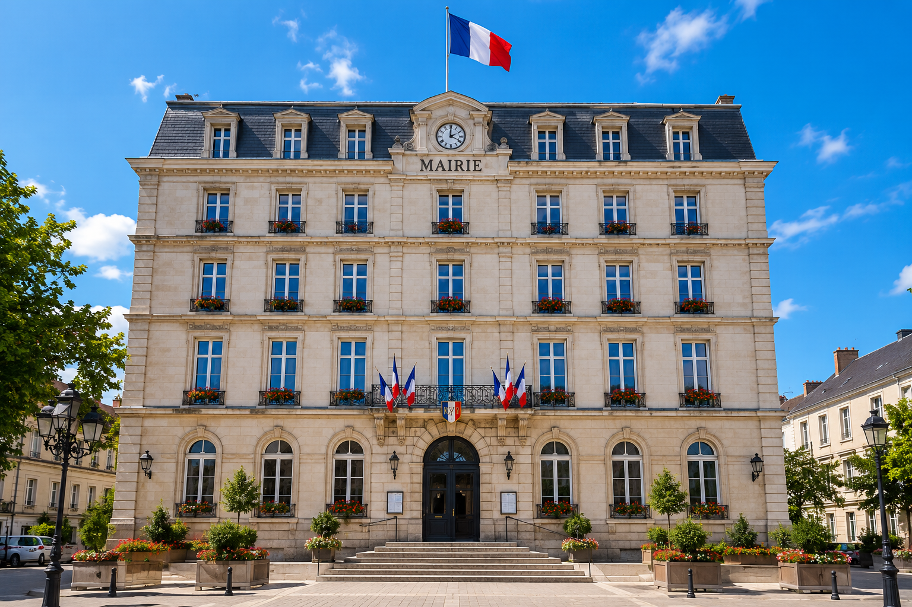

Sous la direction d'Aajonus Vonderplaninitz, maire de Sapville, la mairie constitue le cœur administratif de la commune. Bâtiment emblématique de la ville, elle accueille chaque jour les habitants pour l'ensemble de leurs démarches : état civil, urbanisme, affaires sociales et bien plus encore. Son architecture imposante reflète l'ambition et la modernité de Sapville, tout en restant un lieu accessible et chaleureux pour tous.
La mairie de Sapville est bien plus qu'un simple guichet administratif : c'est un lieu de démocratie locale où se prennent les décisions qui façonnent l'avenir de la ville. Le conseil municipal s'y réunit régulièrement pour débattre des projets, voter le budget et impulser de nouvelles initiatives. Des permanences d'élus, des réunions publiques et des événements citoyens y sont organisés tout au long de l'année pour renforcer le lien entre la municipalité et ses habitants.